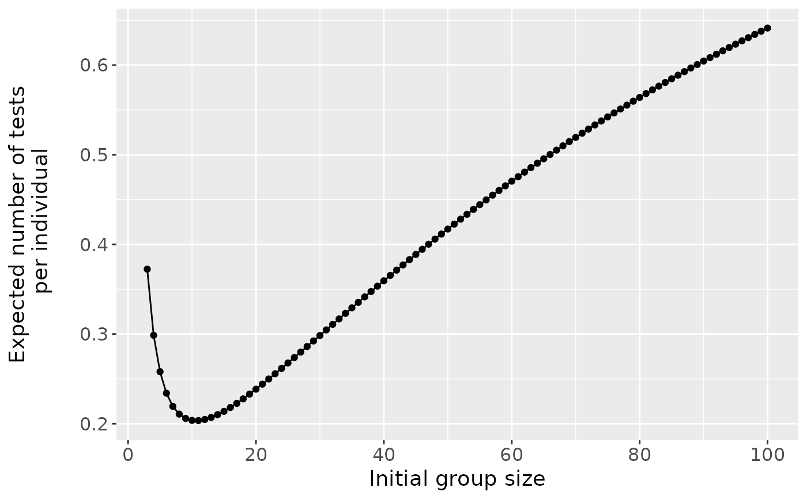
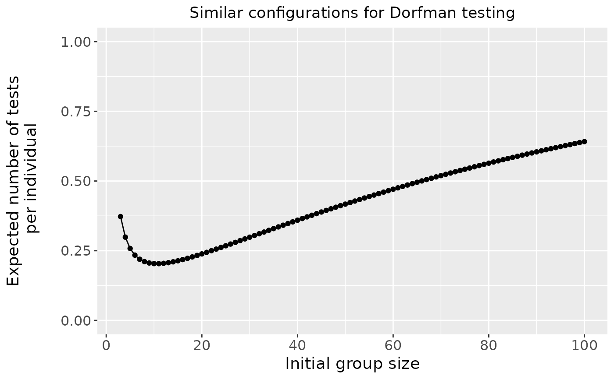
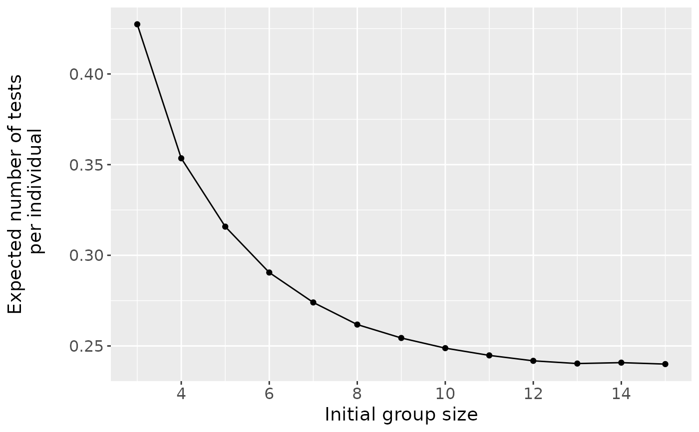
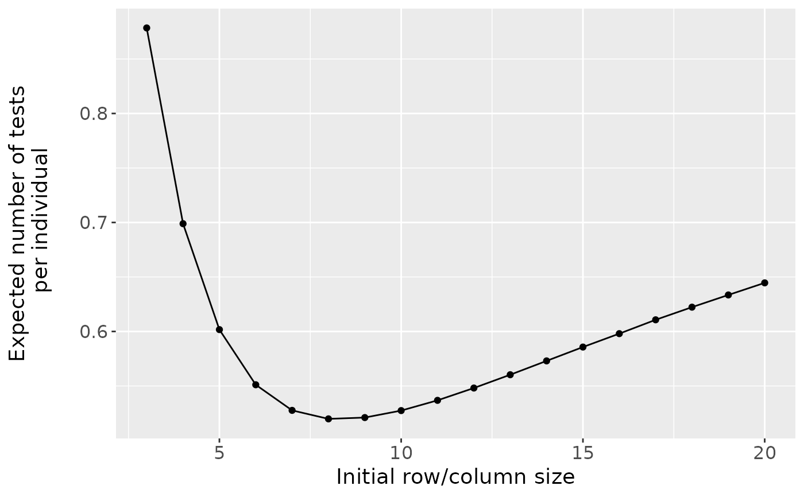
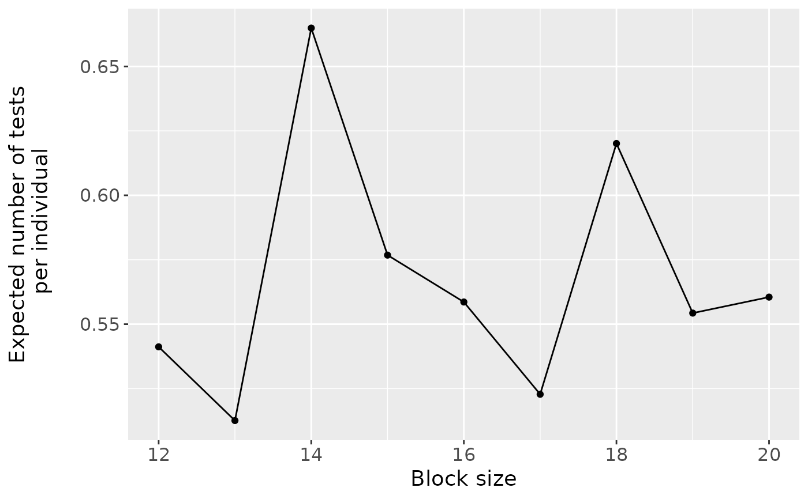
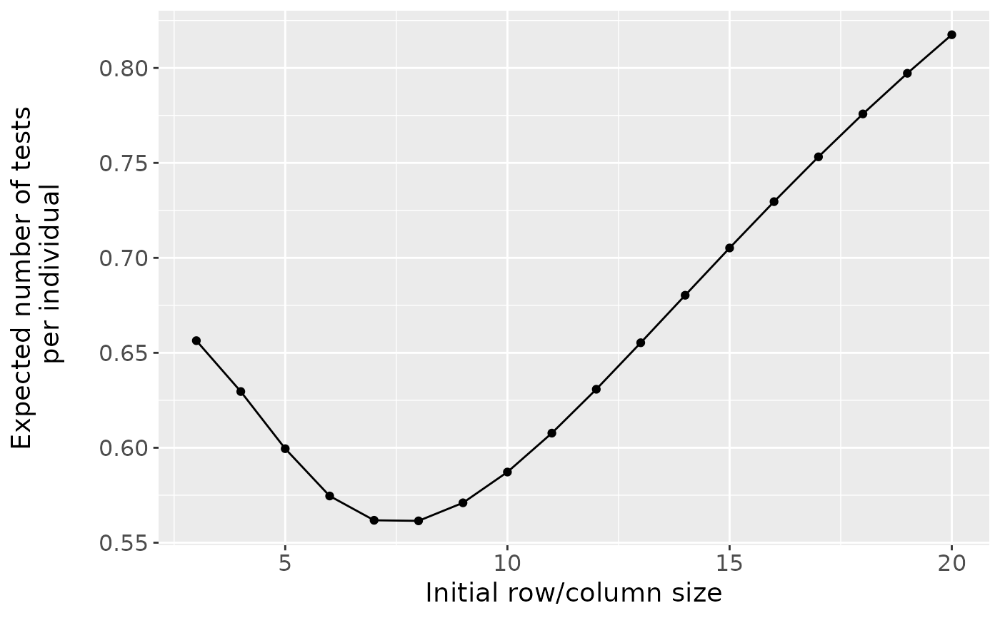

Usage
# S3 method for class 'OTC'
plot(x, ...)Value
A plot of the expected number of tests per individual for similar configurations provided in the object.
Details
This function produces a plot for objects of class "OTC"
returned by OTC1 or OTC2. It plots the expected
number of tests per individual for each similar testing configuration
in the object.
In addition to the OTC, the OTC1 and OTC2
functions provide operating characteristics for other configurations
corresponding to each initial group size provided by the user. For
algorithms where there is only one configuration for each initial group size
(non-informative two-stage hierarchical and all array testing algorithms),
results for each initial group size are plotted. For algorithms where there
is more than one possible configuration for each initial group size
(informative two-stage hierarchical and all three-stage hierarchical
algorithms), the results corresponding to the best configuration for each
initial group size are plotted.
If a single value is provided for the group.sz argument in the
OTC1 or OTC2 functions, no plot will be
produced.
The plot is produced using the ggplot2 package. Customization
features from ggplot2 are available once the package is loaded.
Examples are shown in the 'Examples' section.
Examples
# Find the optimal testing configuration for
# non-informative two-stage hierarchical testing.
res1 <- OTC1(algorithm = "D2", p = 0.01, Se = 0.99, Sp = 0.99,
group.sz = 3:100, obj.fn = c("ET", "MAR", "GR1"),
weights = matrix(data = c(1, 1), nrow = 1, ncol = 2))
#> Initial Group Size = 3
#> Initial Group Size = 4
#> Initial Group Size = 5
#> Initial Group Size = 6
#> Initial Group Size = 7
#> Initial Group Size = 8
#> Initial Group Size = 9
#> Initial Group Size = 10
#> Initial Group Size = 11
#> Initial Group Size = 12
#> Initial Group Size = 13
#> Initial Group Size = 14
#> Initial Group Size = 15
#> Initial Group Size = 16
#> Initial Group Size = 17
#> Initial Group Size = 18
#> Initial Group Size = 19
#> Initial Group Size = 20
#> Initial Group Size = 21
#> Initial Group Size = 22
#> Initial Group Size = 23
#> Initial Group Size = 24
#> Initial Group Size = 25
#> Initial Group Size = 26
#> Initial Group Size = 27
#> Initial Group Size = 28
#> Initial Group Size = 29
#> Initial Group Size = 30
#> Initial Group Size = 31
#> Initial Group Size = 32
#> Initial Group Size = 33
#> Initial Group Size = 34
#> Initial Group Size = 35
#> Initial Group Size = 36
#> Initial Group Size = 37
#> Initial Group Size = 38
#> Initial Group Size = 39
#> Initial Group Size = 40
#> Initial Group Size = 41
#> Initial Group Size = 42
#> Initial Group Size = 43
#> Initial Group Size = 44
#> Initial Group Size = 45
#> Initial Group Size = 46
#> Initial Group Size = 47
#> Initial Group Size = 48
#> Initial Group Size = 49
#> Initial Group Size = 50
#> Initial Group Size = 51
#> Initial Group Size = 52
#> Initial Group Size = 53
#> Initial Group Size = 54
#> Initial Group Size = 55
#> Initial Group Size = 56
#> Initial Group Size = 57
#> Initial Group Size = 58
#> Initial Group Size = 59
#> Initial Group Size = 60
#> Initial Group Size = 61
#> Initial Group Size = 62
#> Initial Group Size = 63
#> Initial Group Size = 64
#> Initial Group Size = 65
#> Initial Group Size = 66
#> Initial Group Size = 67
#> Initial Group Size = 68
#> Initial Group Size = 69
#> Initial Group Size = 70
#> Initial Group Size = 71
#> Initial Group Size = 72
#> Initial Group Size = 73
#> Initial Group Size = 74
#> Initial Group Size = 75
#> Initial Group Size = 76
#> Initial Group Size = 77
#> Initial Group Size = 78
#> Initial Group Size = 79
#> Initial Group Size = 80
#> Initial Group Size = 81
#> Initial Group Size = 82
#> Initial Group Size = 83
#> Initial Group Size = 84
#> Initial Group Size = 85
#> Initial Group Size = 86
#> Initial Group Size = 87
#> Initial Group Size = 88
#> Initial Group Size = 89
#> Initial Group Size = 90
#> Initial Group Size = 91
#> Initial Group Size = 92
#> Initial Group Size = 93
#> Initial Group Size = 94
#> Initial Group Size = 95
#> Initial Group Size = 96
#> Initial Group Size = 97
#> Initial Group Size = 98
#> Initial Group Size = 99
#> Initial Group Size = 100
#>
#> Number of minutes running: 0
#>
plot(res1)

# Customize the plot using the ggplot2 package.
library(ggplot2)
plot(res1) + ylim(0,1) +
ggtitle("Similar configurations for Dorfman testing") +
theme(plot.title = element_text(hjust = 0.5))

# Find the optimal testing configuration for
# informative three-stage hierarchical testing
res2 <- OTC1(algorithm = "ID3", p = 0.025,
Se = c(0.95, 0.95, 0.99), Sp = c(0.96, 0.96, 0.98),
group.sz = 3:15, obj.fn = "ET", alpha = 2)
#> Initial Group Size = 3
#> Initial Group Size = 4
#> Initial Group Size = 5
#> Initial Group Size = 6
#> Initial Group Size = 7
#> Initial Group Size = 8
#> Initial Group Size = 9
#> Initial Group Size = 10
#> Initial Group Size = 11
#> Initial Group Size = 12
#> Initial Group Size = 13
#> Initial Group Size = 14
#> Initial Group Size = 15
#>
#> Number of minutes running: 0.01
#>
plot(res2)

# Find the optimal testing configuration for
# informative array testing without master pooling.
res3 <- OTC1(algorithm = "IA2", p = 0.09, alpha = 2,
Se = 0.90, Sp = 0.90, group.sz = 3:20, obj.fn = "ET")
#> Row/Column Size = 3, Array Size = 9
#> Row/Column Size = 4, Array Size = 16
#> Row/Column Size = 5, Array Size = 25
#> Row/Column Size = 6, Array Size = 36
#> Row/Column Size = 7, Array Size = 49
#> Row/Column Size = 8, Array Size = 64
#> Row/Column Size = 9, Array Size = 81
#> Row/Column Size = 10, Array Size = 100
#> Row/Column Size = 11, Array Size = 121
#> Row/Column Size = 12, Array Size = 144
#> Row/Column Size = 13, Array Size = 169
#> Using simulation
#> Row/Column Size = 14, Array Size = 196
#> Using simulation
#> Row/Column Size = 15, Array Size = 225
#> Using simulation
#> Row/Column Size = 16, Array Size = 256
#> Using simulation
#> Row/Column Size = 17, Array Size = 289
#> Using simulation
#> Row/Column Size = 18, Array Size = 324
#> Using simulation
#> Row/Column Size = 19, Array Size = 361
#> Using simulation
#> Row/Column Size = 20, Array Size = 400
#>
#> Number of minutes running: 0.35
#>
plot(res3)

# Find the optimal testing configuration for
# informative two-stage hierarchical testing.
Se <- matrix(data = c(rep(0.95, 2), rep(0.99, 2)),
nrow = 2, ncol = 2, byrow = FALSE)
Sp <- matrix(data = c(rep(0.96, 2), rep(0.98, 2)),
nrow = 2, ncol = 2, byrow = FALSE)
res4 <- OTC2(algorithm = "ID2", alpha = c(18.25, 0.75, 0.75, 0.25),
Se = Se, Sp = Sp, group.sz = 12:20)
#> Block Size = 12
#> Block Size = 13
#> Block Size = 14
#> Block Size = 15
#> Block Size = 16
#> Block Size = 17
#> Block Size = 18
#> Block Size = 19
#> Block Size = 20
#>
#> Number of minutes running: 0.29
#>
plot(res4)

# Find the optimal testing configuration for
# non-informative array testing with master pooling.
res5 <- OTC2(algorithm = "A2M", p.vec = c(0.90, 0.04, 0.04, 0.02),
Se = rep(0.99, 2), Sp = rep(0.99, 2), group.sz = 3:20)
#> Row/Column Size = 3, Array Size = 9
#> Row/Column Size = 4, Array Size = 16
#> Row/Column Size = 5, Array Size = 25
#> Row/Column Size = 6, Array Size = 36
#> Row/Column Size = 7, Array Size = 49
#> Row/Column Size = 8, Array Size = 64
#> Row/Column Size = 9, Array Size = 81
#> Row/Column Size = 10, Array Size = 100
#> Row/Column Size = 11, Array Size = 121
#> Row/Column Size = 12, Array Size = 144
#> Row/Column Size = 13, Array Size = 169
#> Row/Column Size = 14, Array Size = 196
#> Row/Column Size = 15, Array Size = 225
#> Row/Column Size = 16, Array Size = 256
#> Row/Column Size = 17, Array Size = 289
#> Row/Column Size = 18, Array Size = 324
#> Row/Column Size = 19, Array Size = 361
#> Row/Column Size = 20, Array Size = 400
#>
#> Number of minutes running: 0.05
#>
plot(res5)
